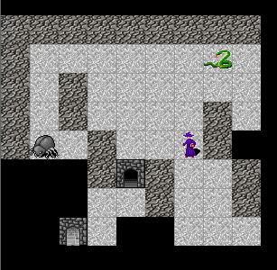

2018-04-02-haskell-rogue-like_12
Haskell roguelike - Energy & Time Systems
Time systems
The game is now at the point that we need to start considering how the non-player actors are going to move and interact with the world. Most roguelikes are turn based, when it is the player’s turn they can take as long as they want to make a move. Once the player moves each of the other actors get a turn.
Its unlikely that each action an actor can take should take up exactly one turn. For example consider
- an actor class that moves slower than other actors (e.g. a snail)
- an actor class that moves faster
- making it slower to walk over some surfaces than other (e.g. ice vs bricks)
- actions that should not count as a full turn e.g. recharging, preparing spells, eating etc
There are many potential ways to design this, see e.g.
Energy system
I’ve chosen to implement an ‘energy system’ to do the time management. In an energy system
- Each actor has a quantity of available energy
- Actors need a certain amount of energy before they can perform any action
- Each actor is given a fixed amount of energy each turn
- Actors can perform multiple actions in one move if they have the energy for it
- Actors can store energy for future moves
- There is a per-actor or per-class limit on how much energy can be stored
- The same action can cost a different amount of energy for different actors. E.g. a slow moving actor has a higher move energy cost than a fast actor.
For example if we wanted a fast and a slow actor we could set it up as follows
| Actor | Max energy | Move energy cost |
|---|---|---|
| slow | 150 | 150 |
| fast | 100 | 100 |
Lets see how that would work for several turns
- energy added per tick = 100
- min move energy = 100
| Tick | Actor | Energy | Action | Remaining after turn |
|---|---|---|---|---|
| 1 | slow | 0 | not enough energy to move | 0 |
| 1 | fast | 0 | not enough energy to move | 0 |
| 2 | slow | 100 | not enough energy to move (needs 150) | 100 |
| 2 | fast | 100 | move using 100 energy points | 0 |
| 3 | slow | 150 | move using 100 energy points (note max stored is 150) | 0 |
| 3 | fast | 100 | move using 100 energy points | 0 |
| 4 | slow | 0 | not enough energy to move (needs 150) | 100 |
| 4 | fast | 100 | move using 100 energy points | 0 |
As you can see the fast actor gets to move each turn, the slow actor ends up skipping turns until it has stored enough energy.
The time system you choose will effect the feel of your game, but I think an energy based system like this is both simple enough to implement and also flexible enough to grow with your game’s requirements.
Bounded values
Before discussing the implementation of an energy system lets implement a small utility type for dealing with bounded values. E.g. we need a type that manages storing the actor’s energy and ensures that the upper and lower bounds are honoured.
12_energy/src/BoundedInt.hs (4 to 38)
module BoundedInt ( BInt
, new
, update
, set
, get
, getMax
) where
import Protolude hiding (maxBound, get)
newtype BInt = BInt (Int, Int) deriving (Eq, Show)
new :: Int -> Int -> BInt
new maxBound v =
BInt (maxBound, max 0 $ min maxBound v)
set :: Int -> BInt -> BInt
set newValue (BInt (maxBound, _)) =
BInt (maxBound, max 0 $ min maxBound newValue)
get :: BInt -> Int
get (BInt (_, v)) =
v
getMax :: BInt -> Int
getMax (BInt (m, _)) =
m
update :: (Int -> Int) -> BInt -> BInt
update fn (BInt (maxBound, v)) =
BInt (maxBound, max 0 . min maxBound $ fn v)Here is example of BoundedInt being used
import qualified BoundedInt as B
let val1 = B.new 200 100
print $ B.get val1
# > 100
let val2 = B.set 120 val1
print $ B.get val2
# > 120
let val3 = B.set 900 val2
print $ B.get val3
# > 200
let val4 = B.update (subtract 50) val3
print $ B.get val4
# > 150Preliminaries
The World type gets two new properties that store details about the energy system
12_energy/src/GameCore.hs (55 to 56)
, _wdMinMoveEnergy :: !Int -- ^ min energy required before any more, regardless of cost, can be attempted
, _wdEnergyIncrements :: !Int -- ^ amount of energy that is added per game loopThe Actor type gets three new properties
12_energy/src/GameCore.hs (36 to 38)
, _acEnergy :: !B.BInt -- ^ available energy, bounded
, _acMoveEnergyCost :: !Int
, _acSkipMove :: !Bool- acEnergy: The amount of energy the actor has available for a move
- acMoveEnergyCost: The cost of each move for this actor
- acSkipMove: True if the actor elects to skip a move, e.g. to store energy for a future move
mkPlayer and mkEnemy setup each of the actor classes
12_energy/src/GameEngine.hs (151 to 153)
12_energy/src/GameEngine.hs (167 to 169)
The World gets configured for the energy system
12_energy/src/GameEngine.hs (96 to 97)
We are also going to need a way to update an actor by id
12_energy/src/GameEngine.hs (464 to 469)
-- | Update either the player's actor, or one of the world actors
updateActorById :: World -> Aid -> (Actor -> Actor) -> World
updateActorById w id update =
if w ^. wdPlayer ^. plActor ^. acId == id
then w & (wdPlayer . plActor) .~ update (w ^. wdPlayer ^. plActor) -- update the player's actor
else w & wdActors %~ Map.adjust update id -- update other actor, nop if aid not foundThe energy system
On to the energy system logic. This code comment covers the overall picture, I’ll go into more detail below.
12_energy/src/GameEngine.hs (632 to 685)
-- | Manages the core logic of the energy system.
--
-- [key press] ------> is zero cost move?
-- |
-- |
-- +--<----yes-------+-->--no-----+
-- | |
-- v |
-- +-->(exit) |
-- | ^ |
-- | | v
-- | +--<----no--------player has min move energy?
-- | |
-- | yes
-- | |
-- | v
-- | move player
-- | |
-- | v
-- +--<---yes----player still has > min move energy
-- and is not skipping a move?
-- |
-- no
-- |
-- v
-- ###################################################
-- # | #
-- # v #
-- +--<--------player has > min move energy <--------+ #
-- | # | | #
-- yes # no | #
-- | # | | #
-- | # v | #
-- | # move every non-player actor that | #
-- | # has > min move energy and has | #
-- | # not elected to skip a move. | #
-- | # | | #
-- | # | | #
-- | # v | #
-- | # add wdEnergyIncrements to all actors--+ #
-- | # including player's actor #
-- | # #
-- | ###################################################
-- |
-- |
-- +---------------> set all actors skipMove = False
-- |
-- |
-- v
-- (exit)
--
--
playerMoving :: Int -> World -> World -> World
playerMoving pendingCost pendingWorld oldWorld = Chain of action & early termination
To implement this logic I’m going to have a sequence of functions that need to be run. As you can see from the comment above may of these functions need a way to terminate the sequence rather than continuing.
s1 ----> exit
| ^
v |
s2 --+
| ^
v |
s3 --+
|
v
s4 This is exactly what Either and >>= give us. Remember that although Either is often used to denote success vs failure that is not what Left and Right mean. A Right value means continue the chain, a Left value means stop.
The type of >>= is
(>>=) :: Monad m => m a -> (a -> m b) -> m b
In the examples below its being used with an Either Int Int, so the type is specialised to
(>>=) :: Either Int Int -> (Int -> Either Int Int) -> Either Int Int
-- Runs to end
Right (1 :: Int)
>>= \v1 -> (Right $ v1 + 10)
>>= \v2 -> (Right $ v2 + 100)
#> Right 111- Start with a
Right 1 >>=gets the Right, continues, lambda given1, lambda returnsRight $ 1 + 10>>=gets the Right, continues, lambda given11, lambda returnsRight $ 11 + 100- Final result is
Right 111
-- Stops early
Right (1 :: Int)
>>= \v1 -> (Left $ v1 + 10)
>>= \v2 -> (Right $ v2 + 100)
#> Left 11- Start with a
Right 1 >>=gets the Right, continues, lambda given1, lambda returnsLeft $ 1 + 10>>=gets the Left, stops- Final result is
Left 11
Logic - top half
This code corresponds to the top half of the flow diagram in the comment. Here you can see >>= used to chain the sequence.
12_energy/src/GameEngine.hs (688 to 693)
let playerAttemptedMoveWorld =
Right oldWorld
>>= checkIfNonMove
>>= checkIfPlayerHasMinEnergy
>>= runPendingIfPlayerHasEnergy
>>= stopIfPlayerCanStillMove- Check for a non-move (zero cost)
- Check if the player has at least the min-move-energy
- Perform the move if the player has enough energy
- If the player can move again then stop
Logic - bottom half
This code corresponds to the bottom half of the flow diagram in the comment.
We start with the Either World World from above. If the value is Left World then stop and return the world, if its a Right World then continue.
Here &, the reverse application operator, is being used to combine the functions. In other languages you may have seen this called |>.
E.g.
It is called the reverse application operator as it applies the calls opposite to the way you usually would e.g by using .
I chose to use it here as it mirrors the flow of the >>= chain above.
12_energy/src/GameEngine.hs (697 to 704)
case playerAttemptedMoveWorld of
Left w -> w -- Left means stop
Right w -> -- Right means continue with other actors
-- Loop, adding energy (wdEnergyincrements) to all actors until the player has enough energy to move
storeSkipTurnEnergy w
& runNonPlayerActorLoop
& restoreSkipTurnEnergy
& disableSkip- Store the player energy level
- Run non-player loop
- Restore the players energy
- Set skip-move to False for all actors
Code top half
The code and comments for the first half of the code should be reasonably self-explanatory.
12_energy/src/GameEngine.hs (709 to 739)
checkIfNonMove w =
-- If the cost is zero/negative then this is not an actual move
-- Apply the pending action and continue
if pendingCost <= 0 && not (pendingWorld ^. wdPlayer ^. plActor ^. acSkipMove)
then Left pendingWorld
else Right w
checkIfPlayerHasMinEnergy w =
if B.get (w ^. wdPlayer ^. plActor ^. acEnergy) >= w ^. wdMinMoveEnergy
then Right w -- continue
else Left w -- not enough energy to move regardless of move cost
runPendingIfPlayerHasEnergy w =
if B.get (w ^. wdPlayer ^. plActor ^. acEnergy) >= pendingCost
then
-- perform move and subtract energy
Right (pendingWorld & (wdPlayer . plActor . acEnergy) %~ B.update (subtract pendingCost))
else
-- disallow
Left w
stopIfPlayerCanStillMove w =
let
a = w ^. wdPlayer ^. plActor
hasEnergy = B.get (a ^. acEnergy) > a ^. acMoveEnergyCost
skipMove = a ^. acSkipMove
in
if
| skipMove -> Right w -- The player elected to skip a move, continue with others
| hasEnergy -> Left w -- The player has energy, its still their turn
| otherwise -> Right w -- continueCode bottom half
There is a bit more going on here, so I’ll cover function by function in order of execution. Remember that these all run, there is no early termination as we are using & not >>=
storeSkipTurnEnergy
12_energy/src/GameEngine.hs (797 to 805)
storeSkipTurnEnergy w =
if w ^. wdPlayer ^. plActor ^. acSkipMove
then
-- Store the player's current energy, and set the energy level to zero
-- This lets the actor movement loop run for a full set of turns up to the min energy level
w & (wdPlayer . plPendingEnergy) .~ B.get (w ^. wdPlayer ^. plActor ^. acEnergy)
& (wdPlayer . plActor . acEnergy) %~ B.set 0
else
w- If the player is skipping a move, the stop
- Otherwise
- Store the player’s energy in plPendingEnergy
- Set the player’s energy to zero
The player’s energy is set to zero here so that in the code below we add the wdEnergyIncrements up to wdMinMoveEnergy to give the non-player actors a fair chance to make one full move.
runNonPlayerActorLoop
12_energy/src/GameEngine.hs (743 to 754)
runNonPlayerActorLoop w =
if B.get (w ^. wdPlayer ^. plActor ^. acEnergy) >= w ^. wdMinMoveEnergy
then
w -- The player now has enough energy to move, stop loop
else
let
-- Move actors
w' = moveAllNonPlayers w
-- Add energy for next loop
addEnergy _ a = a & acEnergy %~ B.update ((w' ^. wdEnergyIncrements) +)
in
runNonPlayerActorLoop $ updateAllActors w' addEnergyThis function calls itself recursively, adding wdEnergyIncrements to each actor, until the player has at least wdMinMoveEnergy
- Check if the player has wdMinMoveEnergy if so stop recursion
- Otherwise
- Give all non-players a chance to move (see moveAllNonPlayers below)
- Add wdEnergyIncrements to all actors
- loop
moveAllNonPlayers
Our actors are going to be pretty dim for now, they just try to move in a random direction. We’ll get to AI later on.
12_energy/src/GameEngine.hs (758 to 793)
moveAllNonPlayers w =
let
-- Random directions the actors could move in (no diagonal moves)
directions = [(-1,0), (0,-1), (0,1), (1,0)]
-- Other actors just try to move in random directions
mv aOrig wOrig =
let
-- Pick a random direction to move
(dir, nextStd) = randomElement (aOrig ^. acStdGen) directions
-- Try move, i.e. if there is no wall / actor in the way
w2 = tryMoveActor wOrig aOrig $ fromMaybe (0, 0) dir
in
case w2 of
Nothing ->
-- Unable to move, so skip a turn. This accumulates energy for the next attempt
-- Also update the stdgen for the next time a random number is needed
updateActor wOrig $ aOrig & acSkipMove .~ True
& acStdGen .~ nextStd
Just w2' ->
-- The actor moved, use the new world but remember to update the stdgen
updateActorById w2' (aOrig ^. acId) (\a -> a & acStdGen .~ nextStd)
-- All actors that have enough energy to move and are not skipping a turn
actorsThatCanMove = filter
(\a -> B.get (a ^. acEnergy) >= (w ^. wdMinMoveEnergy) && not (a ^. acSkipMove))
(Map.elems $ w ^. wdActors)
in
-- Are the any actors that could still move?
if null actorsThatCanMove
then
w -- No one left, done
else
-- Give actors that are able to move a chance to move
foldr mv w actorsThatCanMove12_energy/src/GameEngine.hs (825 to 828)
randomElement :: Rnd.StdGen -> [a] -> (Maybe a, Rnd.StdGen)
randomElement g as =
let (i, next) = Rnd.randomR (0, length as - 1) g in
(atMay as i, next)- randomElement gets a random direction to move and returns the next StdGen which must be saved in the actor
- Once an actor can’t move set its acSkipTurn to True. This lets it accumulate energy without moving before the player moves again
- Call mv until there are no actors that can move
restoreSkipTurnEnergy
12_energy/src/GameEngine.hs (809 to 815)
restoreSkipTurnEnergy w =
if w ^. wdPlayer ^. plActor ^. acSkipMove
then
-- Restore and pending energy, up to the player's max energy level
w & (wdPlayer . plActor . acEnergy) %~ B.update ((w ^. wdPlayer ^. plPendingEnergy) +)
else
w*. Restore the players energy
disableSkip
12_energy/src/GameEngine.hs (819 to 820)
. Set acSkipMove* to False for all actors
Running the energy system
The energy system logic run each time a key is pressed (in runCmd)
12_energy/src/GameEngine.hs (187 to 199)
"key" -> do
-- Handle the key press
atomically $ modifyTVar' worldV (\w ->
-- Do the actions as if they will succeed
let pendingWorld = runActions w $ handleKey w cmdData in
-- Apply, if the move is allowed
-- Cost is hard-coded to 100 for now, this will be fixed later
playerMoving 100 pendingWorld w
)
-- Get the updated world
w2 <- atomically $ readTVar worldV
-- Draw
drawAndSend w2Notice that the actions are run, assuming that they will succeed. playerMoving (the energy system) is then called and if allowed the pending world is used. If not then the old world is.
Result
That was a large chunk of code but it adds a major part of the game logic.

You can see the non-player actors moving randomly around and the snake is faster than the player so gets multiple moves. Next we’ll give the actors some intelligence.
Chapters
Changes
src/BoundedInt.hs
diff -w -B -a -d -u -b --new-file 11_sticky_light/src/BoundedInt.hs 12_energy/src/BoundedInt.hs
--- 11_sticky_light/src/BoundedInt.hs
+++ 12_energy/src/BoundedInt.hs
@@ -0,0 +1,39 @@
+{-# LANGUAGE NoImplicitPrelude #-}
+
+
+module BoundedInt ( BInt
+ , new
+ , update
+ , set
+ , get
+ , getMax
+ ) where
+
+import Protolude hiding (maxBound, get)
+
+newtype BInt = BInt (Int, Int) deriving (Eq, Show)
+
+new :: Int -> Int -> BInt
+new maxBound v =
+ BInt (maxBound, max 0 $ min maxBound v)
+
+
+set :: Int -> BInt -> BInt
+set newValue (BInt (maxBound, _)) =
+ BInt (maxBound, max 0 $ min maxBound newValue)
+
+
+get :: BInt -> Int
+get (BInt (_, v)) =
+ v
+
+
+getMax :: BInt -> Int
+getMax (BInt (m, _)) =
+ m
+
+
+update :: (Int -> Int) -> BInt -> BInt
+update fn (BInt (maxBound, v)) =
+ BInt (maxBound, max 0 . min maxBound $ fn v)
+
Common subdirectories: 11_sticky_light/src/Data and 12_energy/src/Data
src/GameCore.hs
diff -w -B -a -d -u -b --new-file 11_sticky_light/src/GameCore.hs 12_energy/src/GameCore.hs
--- 11_sticky_light/src/GameCore.hs
+++ 12_energy/src/GameCore.hs
@@ -16,6 +16,7 @@
import qualified GameHost as Host
import qualified EntityType as E
+import qualified BoundedInt as B
data ActorClass = ClassPlayer
| ClassEnemy
@@ -29,10 +30,13 @@
, _acWorldPos :: !WorldPos
, _acStdGen :: !Rnd.StdGen
, _acFov :: !(Maybe [(WorldPos, [WorldPos])])
-
, _acFovHistory :: !(Set WorldPos)
-
, _acFovDistance :: !Int
+
+ , _acEnergy :: !B.BInt -- ^ available energy, bounded
+ , _acMoveEnergyCost :: !Int
+ , _acSkipMove :: !Bool
+
}
data Player = Player { _plConn :: !Host.Connection
@@ -40,12 +44,17 @@
, _plScreenSize :: !(Int, Int)
, _plWorldTopLeft :: !WorldPos
, _plViewPortStyle :: !ViewPortStyle
+ , _plPendingEnergy :: !Int
}
data World = World { _wdPlayer :: !Player
, _wdConfig :: !Config
, _wdMap :: !(Map WorldPos Entity)
, _wdActors :: !(Map Aid Actor)
+
+ , _wdMinMoveEnergy :: !Int -- ^ min energy required before any more, regardless of cost, can be attempted
+ , _wdEnergyIncrements :: !Int -- ^ amount of energy that is added per game loop
+
}
data Config = Config { _cfgKeys :: !(Map Text Text)
src/GameEngine.hs
diff -w -B -a -d -u -b --new-file 11_sticky_light/src/GameEngine.hs 12_energy/src/GameEngine.hs
--- 11_sticky_light/src/GameEngine.hs
+++ 12_energy/src/GameEngine.hs
@@ -26,6 +26,7 @@
import GameHost (conSendData, conReceiveText)
import qualified Entities as E
import qualified EntityType as E
+import qualified BoundedInt as B
runGame :: IO ()
@@ -91,6 +92,10 @@
, _wdActors = Map.fromList [ (bug ^. acId, bug)
, (snake ^. acId, snake)
]
+
+ , _wdMinMoveEnergy = 100
+ , _wdEnergyIncrements = 20
+
}
in
-- Calculate the actors fov
@@ -130,6 +135,7 @@
, _plWorldTopLeft = WorldPos (0, 0)
, _plActor = mkPlayersActor
, _plViewPortStyle = ViewPortBorder 2
+ , _plPendingEnergy = 0
}
mkPlayersActor =
@@ -141,6 +147,11 @@
, _acFovDistance = 3
, _acFov = Nothing
, _acFovHistory = Set.empty
+
+ , _acSkipMove = False
+ , _acMoveEnergyCost = 100
+ , _acEnergy = B.new 200 100
+
}
mkEnemyActor aid e (x, y) =
@@ -152,6 +163,11 @@
, _acFovDistance = 2
, _acFov = Nothing
, _acFovHistory = Set.empty
+
+ , _acSkipMove = False
+ , _acMoveEnergyCost = 150
+ , _acEnergy = B.new 180 100
+
}
@@ -167,9 +183,16 @@
drawAndSend w
sendLog conn "draw"
+
"key" -> do
-- Handle the key press
- atomically $ modifyTVar' worldV (\w -> runActions w $ handleKey w cmdData)
+ atomically $ modifyTVar' worldV (\w ->
+ -- Do the actions as if they will succeed
+ let pendingWorld = runActions w $ handleKey w cmdData in
+ -- Apply, if the move is allowed
+ -- Cost is hard-coded to 100 for now, this will be fixed later
+ playerMoving 100 pendingWorld w
+ )
-- Get the updated world
w2 <- atomically $ readTVar worldV
-- Draw
@@ -437,6 +460,16 @@
else w & wdActors %~ Map.adjust (const actor) (actor ^. acId) -- update other actor, nop if aid not found
+
+-- | Update either the player's actor, or one of the world actors
+updateActorById :: World -> Aid -> (Actor -> Actor) -> World
+updateActorById w id update =
+ if w ^. wdPlayer ^. plActor ^. acId == id
+ then w & (wdPlayer . plActor) .~ update (w ^. wdPlayer ^. plActor) -- update the player's actor
+ else w & wdActors %~ Map.adjust update id -- update other actor, nop if aid not found
+
+
+
-- | Update all actors, including the player's actor
updateAllActors :: World -> (World -> Actor -> Actor) -> World
updateAllActors w fn =
@@ -591,7 +623,207 @@
foldr Map.delete blackBg $ lightAt <> seen
-
flatFov :: Maybe [(WorldPos, [WorldPos])] -> [WorldPos]
flatFov Nothing = []
flatFov (Just fov) = Lst.nub . Lst.concat $ snd <$> fov
+
+
+
+-- | Manages the core logic of the energy system.
+--
+-- [key press] ------> is zero cost move?
+-- |
+-- |
+-- +--<----yes-------+-->--no-----+
+-- | |
+-- v |
+-- +-->(exit) |
+-- | ^ |
+-- | | v
+-- | +--<----no--------player has min move energy?
+-- | |
+-- | yes
+-- | |
+-- | v
+-- | move player
+-- | |
+-- | v
+-- +--<---yes----player still has > min move energy
+-- and is not skipping a move?
+-- |
+-- no
+-- |
+-- v
+-- ###################################################
+-- # | #
+-- # v #
+-- +--<--------player has > min move energy <--------+ #
+-- | # | | #
+-- yes # no | #
+-- | # | | #
+-- | # v | #
+-- | # move every non-player actor that | #
+-- | # has > min move energy and has | #
+-- | # not elected to skip a move. | #
+-- | # | | #
+-- | # | | #
+-- | # v | #
+-- | # add wdEnergyIncrements to all actors--+ #
+-- | # including player's actor #
+-- | # #
+-- | ###################################################
+-- |
+-- |
+-- +---------------> set all actors skipMove = False
+-- |
+-- |
+-- v
+-- (exit)
+--
+--
+playerMoving :: Int -> World -> World -> World
+playerMoving pendingCost pendingWorld oldWorld =
+
+
+ let playerAttemptedMoveWorld =
+ Right oldWorld
+ >>= checkIfNonMove
+ >>= checkIfPlayerHasMinEnergy
+ >>= runPendingIfPlayerHasEnergy
+ >>= stopIfPlayerCanStillMove
+
+ in
+
+ case playerAttemptedMoveWorld of
+ Left w -> w -- Left means stop
+ Right w -> -- Right means continue with other actors
+ -- Loop, adding energy (wdEnergyincrements) to all actors until the player has enough energy to move
+ storeSkipTurnEnergy w
+ & runNonPlayerActorLoop
+ & restoreSkipTurnEnergy
+ & disableSkip
+
+
+ where
+
+ checkIfNonMove w =
+ -- If the cost is zero/negative then this is not an actual move
+ -- Apply the pending action and continue
+ if pendingCost <= 0 && not (pendingWorld ^. wdPlayer ^. plActor ^. acSkipMove)
+ then Left pendingWorld
+ else Right w
+
+ checkIfPlayerHasMinEnergy w =
+ if B.get (w ^. wdPlayer ^. plActor ^. acEnergy) >= w ^. wdMinMoveEnergy
+ then Right w -- continue
+ else Left w -- not enough energy to move regardless of move cost
+
+ runPendingIfPlayerHasEnergy w =
+ if B.get (w ^. wdPlayer ^. plActor ^. acEnergy) >= pendingCost
+ then
+ -- perform move and subtract energy
+ Right (pendingWorld & (wdPlayer . plActor . acEnergy) %~ B.update (subtract pendingCost))
+ else
+ -- disallow
+ Left w
+
+ stopIfPlayerCanStillMove w =
+ let
+ a = w ^. wdPlayer ^. plActor
+ hasEnergy = B.get (a ^. acEnergy) > a ^. acMoveEnergyCost
+ skipMove = a ^. acSkipMove
+ in
+ if
+ | skipMove -> Right w -- The player elected to skip a move, continue with others
+ | hasEnergy -> Left w -- The player has energy, its still their turn
+ | otherwise -> Right w -- continue
+
+
+
+ runNonPlayerActorLoop w =
+ if B.get (w ^. wdPlayer ^. plActor ^. acEnergy) >= w ^. wdMinMoveEnergy
+ then
+ w -- The player now has enough energy to move, stop loop
+ else
+ let
+ -- Move actors
+ w' = moveAllNonPlayers w
+ -- Add energy for next loop
+ addEnergy _ a = a & acEnergy %~ B.update ((w' ^. wdEnergyIncrements) +)
+ in
+ runNonPlayerActorLoop $ updateAllActors w' addEnergy
+
+
+
+ moveAllNonPlayers w =
+ let
+ -- Random directions the actors could move in (no diagonal moves)
+ directions = [(-1,0), (0,-1), (0,1), (1,0)]
+
+ -- Other actors just try to move in random directions
+ mv aOrig wOrig =
+ let
+ -- Pick a random direction to move
+ (dir, nextStd) = randomElement (aOrig ^. acStdGen) directions
+ -- Try move, i.e. if there is no wall / actor in the way
+ w2 = tryMoveActor wOrig aOrig $ fromMaybe (0, 0) dir
+ in
+ case w2 of
+ Nothing ->
+ -- Unable to move, so skip a turn. This accumulates energy for the next attempt
+ -- Also update the stdgen for the next time a random number is needed
+ updateActor wOrig $ aOrig & acSkipMove .~ True
+ & acStdGen .~ nextStd
+
+ Just w2' ->
+ -- The actor moved, use the new world but remember to update the stdgen
+ updateActorById w2' (aOrig ^. acId) (\a -> a & acStdGen .~ nextStd)
+
+ -- All actors that have enough energy to move and are not skipping a turn
+ actorsThatCanMove = filter
+ (\a -> B.get (a ^. acEnergy) >= (w ^. wdMinMoveEnergy) && not (a ^. acSkipMove))
+ (Map.elems $ w ^. wdActors)
+ in
+ -- Are the any actors that could still move?
+ if null actorsThatCanMove
+ then
+ w -- No one left, done
+ else
+ -- Give actors that are able to move a chance to move
+ foldr mv w actorsThatCanMove
+
+
+
+ storeSkipTurnEnergy w =
+ if w ^. wdPlayer ^. plActor ^. acSkipMove
+ then
+ -- Store the player's current energy, and set the energy level to zero
+ -- This lets the actor movement loop run for a full set of turns up to the min energy level
+ w & (wdPlayer . plPendingEnergy) .~ B.get (w ^. wdPlayer ^. plActor ^. acEnergy)
+ & (wdPlayer . plActor . acEnergy) %~ B.set 0
+ else
+ w
+
+
+
+ restoreSkipTurnEnergy w =
+ if w ^. wdPlayer ^. plActor ^. acSkipMove
+ then
+ -- Restore and pending energy, up to the player's max energy level
+ w & (wdPlayer . plActor . acEnergy) %~ B.update ((w ^. wdPlayer ^. plPendingEnergy) +)
+ else
+ w
+
+
+
+ disableSkip w =
+ updateAllActors w (\_ a -> a & acSkipMove .~ False)
+
+
+
+
+randomElement :: Rnd.StdGen -> [a] -> (Maybe a, Rnd.StdGen)
+randomElement g as =
+ let (i, next) = Rnd.randomR (0, length as - 1) g in
+ (atMay as i, next)
+